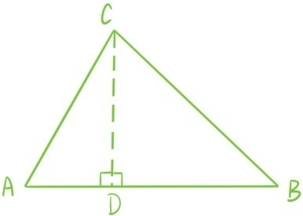

接下来，利用余弦函数cosA，就可以在一般的锐角三角形△ABC中将BC表示成关于AB，AC和∠A的一个具体表达式，过点C作三角形的高，垂足为D。这时△ABC被划分成两个直角三角形。

根据余弦函数的定义，AD=ACcosA，所以BD=AB-ACcosA。根据勾股定理CD和BC也就都可以表示成关于AB，AC和∠A的一个具体表达式，具体的推导如下：
对这两个直角三角形应用勾股定理得到
AC2-AD2=BC2-BD2
移项后利用平方差公式得到
BC2=AC2+(BD2-AD2)=AC2+AB(AB-2AD)
=AC2+AB2-2AB·ACcosA
这个结论为余弦定理，它将对边用两个邻边和角度余弦来表示。接下来继续看△ABC，根据正弦函数的定义
所以
同理可得
我们将等式称为正弦定理，这个结论告诉我们如果知道了锐角三角形的一条边和3个角，那么其他两个边就可以通过这两个角的正弦函数值直接计算得出。
提问时间
6.2.1 在△ABC中已知AB=4，AC=7，∠A=60°，求BC、sinB和sinC。
6.2.2 请思考第四章定理2.9和定理2.11与正弦、余弦定理的关联。